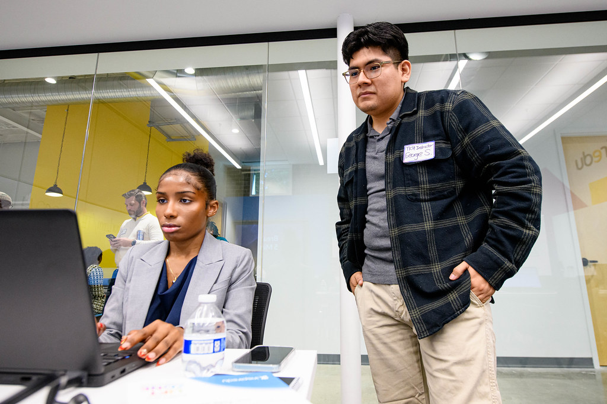

A practical guide for FRNYC staff, pathway teachers, counselors, coordinators, and administrators — built on what strong recruitment systems actually look like in practice.
This playbook answers three core questions:
1 What does strong recruitment and retention look like?
2 How do you build the systems to make it happen?
3 What do you do when things go off track?
Each section connects to a shared framework that reflects what is already happening across FRNYC schools.
Across schools, strong recruitment systems share consistent characteristics. These principles don't operate separately — they drive movement through every stage of the framework.
Recruitment is a year-round process that begins before students enter high school and continues through 9th grade. Schools that delay until 10th grade struggle.
Programs that operate as separate add-ons struggle with both recruitment and retention. Embedded programs see stronger enrollment and persistence.
Students are most influenced by other students. Peer-to-peer communication builds trust, makes pathways feel real, and increases interest and enrollment.
Students enroll and stay when they understand what they will do, what they will gain, and how it connects to their future.
Students with disabilities and multilingual learners are underrepresented due to structural barriers — not lack of interest. Strong programs proactively address this.
Recruitment is not a single moment. It is a continuous process that begins before enrollment and continues through graduation. Each grade represents a different stage.
Introduce the pathway to students and families. Build enough understanding for families to make informed high school choices.
Students are introduced through Career Explorations, advisory, and school-wide messaging. Then given real experiences before the decision point.
Students begin the pathway. The first 6 weeks are critical. Work-based learning and coursework must feel meaningful from the start.
Workload increases, competing priorities emerge, expectations become more demanding. Strong programs re-communicate value and ensure access to meaningful WBL.
Students complete the pathway and transition to postsecondary plans. Seniors become the most effective recruiters for the next cohort.

Not separate initiatives. When FRNYC is embedded in advisory, teacher communication, and school leadership structures — enrollment and retention improve.
FRNYC is woven into advisory periods, teacher communication, and school leadership structures — not bolted on.
The principal participates in messaging, planning, and decision-making. Visible leadership signals school-wide priority.
A single coordinator owns execution — but responsibility for recruitment and retention is shared across the full staff team.
Biweekly review of enrollment, retention, and risks. Data is shared — not siloed. Standing meeting keeps everyone aligned.
Family engagement is essential — and operates differently than student recruitment. Families are key decision-makers in 8th grade and ongoing retention partners through graduation.
Families need clear explanation of what students will do, clear outcomes, and reassurance about workload.
Families can actively support the pathway when they are informed and treated as genuine partners — not just recipients of information.
Recognize milestones with families. When families see concrete progress — certifications, college credits, paid internships — they reinforce persistence.
These tools are designed to reduce burden on individual staff, standardize strong practices, and strengthen student engagement. They function as a system — not standalone resources.
A clear, step-by-step visual map of the student experience from 8th through 12th grade — organized by grade level, key milestones, and Fall vs Spring actions.
Two versions:
| Framework Stage | How This Tool Supports It |
|---|---|
| Awareness | Makes pathway visible and understandable |
| Exposure | Helps students anticipate real experiences |
| Commitment | Supports informed decision-making |
| Experience | Reinforces expectations and milestones |
| Completion | Shows long-term payoff |
A complete, ready-to-use guide for schools to build and sustain a student ambassador / peer mentoring model.
Includes:
| Framework Stage | How This Tool Supports It |
|---|---|
| Awareness | Makes pathways visible through real voices |
| Exposure | Provides authentic insight into experiences |
| Commitment | Builds trust and confidence in decision-making |
| Experience | Strengthens belonging for current students |
| Completion | Reinforces identity and leadership |
A structured model and set of tools to help schools build and sustain a strong student cohort experience from entry through graduation.
Includes:
| Framework Stage | How This Tool Supports It |
|---|---|
| Commitment | Strengthens confidence in joining |
| Experience | Builds belonging and engagement |
| Completion | Drives persistence and identity |
Schools should not attempt to implement all tools at once. Start with the Visual 4-Year Roadmap for planning and clarity. Layer in the Ambassador Toolkit to strengthen recruitment. Build the Cohort Toolkit as a retention system over time.
FRNYC provides a comprehensive, plug-and-play content suite. School teams are responsible for using materials consistently, customizing them to reflect their pathway, and ensuring messaging is accurate and aligned to actual student experience.
| Element | Can Schools Change? | Guidance |
|---|---|---|
| Specific pathway name and focus | Yes — Add | Include your pathway's specific name and industry focus |
| Real examples from your program | Yes — Add | Add real projects, WBL experiences, and college courses |
| Local partners and industry connections | Yes — Add | Name specific partner organizations and employers |
| Student quotes and testimonials | Yes — Add | Use real student voice with permission |
| Core pathway expectations | No — Keep | Do not alter core requirements or outcomes |
| Required accessibility elements | No — Keep | Language access and readability requirements are non-negotiable |
| Outcome claims | No — Keep Accurate | Do not overstate outcomes (e.g., guaranteed internships if not true) |
Data is used to identify gaps, inform decisions, and support early intervention — not to produce reports. Track these four things consistently.
Survey completion rate, yes/maybe/no breakdown, by grade and student population
Actual cohort size vs. target. Demographic breakdown vs. school demographics.
Month-over-month persistence by grade. Flag when attendance drops below 90%.
SWD and MLL participation rate. Compare cohort demographics to school demographics.
Students with disabilities and multilingual learners are systematically underrepresented in FRNYC pathways. This is not because these students are less capable or interested. It is because structural barriers push them out.
Equity is not an add-on — it runs through every stage of the framework. Strong programs proactively audit, identify, and fix structural barriers.
Don't ask: "What activity are we missing?" — Ask: "At what stage of the recruitment framework is the system breaking?"
Do NOT: Add more flyers, send more emails, or wait until next year.
Do NOT: Assume "they can't fit." Do not drop students quietly.
If recruitment is off track, answer these five questions. Every "no" is your problem.
Did every student experience the pathway?
Did every student complete the interest survey?
Did we follow up 1:1 with every "maybe" student?
Did we resolve all scheduling conflicts before the master schedule was locked?
Did we build cohort identity and belonging before asking for commitment?
Based on focus groups with current FRNYC students. The pattern: concrete, specific, and connected to real life.
| Message That Landed | Why It Works |
|---|---|
| "You could earn your OSHA-30 and EPA certifications for free here. Outside, those cost hundreds of dollars." | Concrete dollar value; makes the abstract tangible |
| "In 11th grade, you'll have a paid internship. You earn money while still in high school." | Paid internship is the single most cited motivator across all student groups |
| "You're not just taking classes, you're earning college credits that count at real colleges." | College credits feel like "getting ahead"; reduces fear of falling behind |
| "This is not like regular school. You pick this because you want it, not because you have to." | Agency and choice are central to student identity in these pathways |
| "The teachers here treat you like an adult, not a kid to manage." | Respect and dignity resonate deeply, especially with older students |
| "An HVAC technician paid $30,000 for training you're getting for free right now." | Real-world cost comparisons hit hard with families and students thinking about money |
| "By senior year, you'll have done real work, earned money, and have credits before graduation." | The full picture of completion is motivating when students can see the endpoint |
These messages are commonly used but consistently fail to move students or families.
| Avoid Leading With... | Replace With... |
|---|---|
| "This will make you career-ready." | "By graduation, you'll have a certification, work experience, and college credits — not just a diploma." |
| "Future Ready is a great opportunity." | "Future Ready students here got paid internships starting in 11th grade — here's what that looked like." |
| "This pathway aligns with industry demand." | "HVAC technicians in New York City earn $80,000+ per year. You can start that path here, for free." |
| "You'll develop transferable skills." | "You'll learn how to wire a circuit, read a blueprint, manage a budget, and interview for a job." |
| "We want you to be college and career ready." | "You'll leave with options: go to college with credits already earned, start an apprenticeship, or go straight to work." |
| Step | What It Means |
|---|---|
| 1. Advertise | Make the program visible everywhere — posters, Instagram, announcements, advisory. If students don't know it exists, they can't join. |
| 2. Inform | Host student AND family info sessions. Make outcomes concrete and specific. Jargon kills interest. |
| 3. Apply | Open a 3–4 week application window. Use a simple Google Form. Follow up personally with students who expressed interest but haven't applied. |
| 4. Integrate | Send acceptance letters. Host a welcome event. Make enrollment feel like an accomplishment worth keeping. |
| 5. Retain | Recognize students consistently: semester milestones, internship completions, graduation cords, award ceremonies. Celebration is a retention strategy. |
| # | Principle | In Practice |
|---|---|---|
| 1 | Start Early | Begins in 9th grade advisory, not at enrollment time |
| 2 | Build Exploration First | Expose students to options before asking them to choose |
| 3 | Multiple Touchpoints | Layer advisory, events, peers, and family — no single event recruits anyone |
| 4 | Integrate, Don't Isolate | FRNYC is part of school culture, not a separate program |
| 5 | Use Social Proof | Current students recruit better than any staff member or flyer |
| 6 | Make It Real | Lead with certifications, wages, paid internships, credits |
| 7 | Center Agency | Help students connect the pathway to what they already care about |
| 8 | Build Relationships | The right pathway teacher is the strongest retention force in the building |
| 9 | Prioritize Equity | Track SWD and MLL enrollment. If underrepresented, find and fix the structural cause. |
| Warning Sign | Recommended Action |
|---|---|
| Missing ECC classes | Immediate 1:1 conversation. Find the barrier. Offer tutoring or scheduling flexibility. |
| Declining CCI attendance | Teacher flags to coordinator. Advisor reaches out within 48 hours. |
| "I'm not sure this is for me" | Do not dismiss. Schedule a full advising session before any paperwork. |
| Missing WBL or internship shifts | Immediate outreach to student and family. Understand why. Problem-solve logistics. |
| Interest in switching programs | Explore if it's about the pathway or something else. Connect to another pathway before losing from FRNYC entirely. |
| No advisor contact in 2+ weeks | Flag at biweekly team meeting. Advisor must re-establish contact within the week. |
Access the full suite of FRNYC recruitment and retention resources. All materials are designed to be ready-to-use, adaptable, and aligned to the FRNYC framework.
Staff-facing and student-facing versions. Maps the full 8th–12th grade pathway experience with key milestones.
Download →Role description, selection criteria, training materials, and talking points for peer-to-peer recruitment.
Download →Advisory routines, cohort-building activities, and milestone celebration structures for 10th–12th grade.
Download →The complete FRNYC Recruitment & Retention Playbook in print-ready format with all appendices.
View PDF Version →Training-ready slide deck for COPs, walkthroughs, and professional development sessions.
View Deck →Tested language for students, families, and community members. Includes what works and what to avoid.
View Guide →